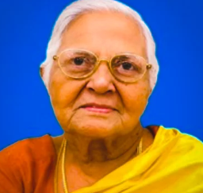

A Letter to My Father
written by his son, N. Gnanasekaran
Father, you were born to Thangappan Nadar and Seeniammal, in a small town in Sivakasi, Virudhunagar district. You were the third of the five children, after your elder brother Shanmughakani and sister Shanmugathai, and before your younger brother Rajasekaran and sister Prema.
You studied Mathematics at American College and passed with first class, then went to Calcutta for a Diploma in Statistics before joining the Indian Fisheries Service as a Statistical Assistant. In 1968 you passed out in the first batch of the Indian Statistical Service, and in 1969 you took up your first posting in Delhi as a Grade IV, at the Central Statistical Organisation - the last person admitted to that service with only a graduate degree; everyone after you needed a postgraduate qualification. Before this, you had already worked at Mandapam in Rameswaram, then Calcutta, then Ernakulam, where the marine fisheries station was - collecting fish eggs for sampling and estimating fish populations with nothing but statistical techniques and patience.
You married my mother, Gandhimathi Stellabai, in 1960. I was born in February 1962 at Madurai Mission Hospital, before that she had a miscarriage and lost first child, then she left the job and stayed as a housewife from then on.
The Father I Remember
Once, as a boy, I cut my jaw badly and was rushed to hospital in an ambulance jeep. Seeing the blood, you fainted and were carried home in the very same jeep. That was 1965. You never could bear to see your children hurt, even as you spent your whole life trying to protect us from exactly that.
Every day after school I waited for you, and you would arrive on your bicycle and let me sit on the bar in front. Later, my sister and I travelled together by cycle-rickshaw until the day a motorcycle clipped our wheel and we feel down.
You played shuttle with a soft yellow ball, and I was your ball boy. Once, you took me to Ernakulam to buy rosewood, and a carpenter built us a folding chair and two cots that lasted three decades. You taught me kite-flying at our Karol Bagh house - a skill I mastered and perform every Independence Day in Delhi. You bought a Philips radio with its licence card, and together we listened to the commentary of the first hockey match from Kuala Lumpur. Then came our first B/W Bigston television with its dipole antenna, which needed adjusting every time the wind changed. In summer we slept outside, gazing at the stars while you told us one long story every single night. Sometimes we used to travel back to south from Delhi to Madras then Madurai then Sivakasi, Kovilpatti & Tirunelveli. Once a while we used to travel to Tenkasi by bus visit Kutralam falls to take bath in the multiple falls and return back to Sivakasi.
1979 - The Hardest Year
That year tested you from every direction at once - home, native place and office: I was in Wellington Hospital for a minor operation, my sister was in RSRM Hospital for a major one, you were sent to Japan for an office training, and your own mother was undergoing radiotherapy for cancer. Somehow you carried all of it.
In 1980 we moved from Karol Bagh to the government quarters at RK Puram, Sector IV. My commute to North Campus took over ninety minutes each way, and once you saw me clinging to a bus footboard with my college bag, you began waking me early every morning so I could catch the 6:55 special bus instead. My mother, in turn, mastered one dependable dish that was always ready before I left.
You studied further under the Colombo Plan, spending a year in Manchester (1983–84) for your Master's. For more than two decades you worked at the Planning Commission in Yojana Bhawan, at the cabinet level, alongside Indira Gandhi, Dr. Manmohan Singh, Montek Singh Ahluwalia and P. Chidambaram - yet still found time to travel home when your mother was unwell, and to be there when my mother needed her cataract surgery. After ten years of applying for a DDA lottery house, you finally got your 2BHK in Kalkaji Extension - house number 62-B, which you always said was lucky, because it was the year I was born.
Family, Weddings, and Loss
In 1986 our first landline arrived at RK Puram. You travelled across the south and west of India looking for the right match for my sister - once standing the entire way from Egmore to Madurai in an unreserved compartment, shirt torn, just so the search could continue. We used to reach Chennai early hours by TN/GT express and wait in the waiting hall for rest of the day to catch the evening train to Madurai. You always said it would be easier if we had our own house in Chennai, somewhere to break the journey.
My elder sister got married in 1987, and you spared no effort inviting every relative from Chennai, Madurai, Sivakasi and Tuticorin. My second sister married in 1992, you were not happy with groom's family - that worried you, and I watched that worry slowly wear you down. In 1990 your own father passed away; you travelled to Sivakasi, brought his ashes back, and carried them to Kashi for immersion. Around the same time, your brother mortgaged the family's only property in Sivakasi for a printing press that failed, and by 1991 that house — the one you grew up in — was auctioned away despite everything you tried. A year later, your mother fell from her cycle, fractured her hip, and did not recover; she passed in 1992.
Just before your retirement in November 1994, I got married that September, and you hosted your office colleagues for a South Indian dinner at the Constitution Club. After retiring at 58, you worked a few more years as a consultant. Even then, you kept working - first for the joy of it, and later, I think, because stillness never suited you.
A Life of Independence
After retirement you left the government quarters for the Kalkaji Extension house, learning its small daily challenges - commuting, shopping, water. You never once took an auto or a cab alone; you would stand at the bus stop for as long as it took. Later, you bought a small one-bedroom house in West Mambalam so we would always have a place to break our journey south, which my youngest sister, settled in Chennai, has kept ever since.
You read the newspaper daily, followed your Tamil serials, and managed your own bank accounts to the very end, refusing anyone's help. You loved your mobile phone and were forever trying to master it - though you lost more than one on a bus or in an auto, since you never believed in keeping anything heavy in your pockets, and never once maintained a wallet. Just a small diary, tucked in your shirt pocket, holding addresses, phone numbers, and a little cash. And always, your government ID card - carried with quiet pride, to the last.
In 1998 I taught you to drive in my Omni van. One day near Deer Park, a motorcyclist reversed without looking; you braked in time, but the car behind (a Fiat) hit us, and it looked as though you had struck the motorcycle. No one was hurt - only the van's back door was dented - but you never drove again after that day.
Faith, Verses, and a Park Called After You
You came with us for my daughter's ear-piercing ceremony at our kuladeivam koil, Poonvandu Ayyanar in Nainapathu near Tiruchendur, worshipping wholeheartedly with full devotion, even though he did not know every ritual. You read Bharathiyar's verses, Gandhi's writings, and chanted Om Nama Shivaya. You joined the Art of Living program under Sri Sri Ravi Shankar and took up daily exercise and meditation afterward. In 2016, when he held a large gathering on the banks of the Yamuna, you insisted on going - and though the crowd was so thick we barely glimpsed his face, you sat through three or four hours of it, content just to be there.
In 2014 we all travelled to Kashmir together - everyone except our mother - one of our most treasured family trips. You often spoke of your official visit years earlier to Khandu Kera on defence work, as if that too had been a kind of pilgrimage.
In the block of twenty-five houses at Kalkaji Extension, you quietly took charge of the park's upkeep - watering every corner, clearing garbage, buying pipes, seeds and urea from your own pension, paying a gardener named Awadhesh for over 5 years, writing letter after letter to the MCD South Zone at Lajpat Nagar until they finally approved the funding themselves. You trimmed the trees, planted the flowers, and formed an association that celebrated Independence Day, Republic Day and Holi together with sweets and tea. Today that park is maintained by the MCD and is named after you - Rathinam Park - though by the time it was named for you in 2025, you lost all your memory and your memory could no longer hold onto the honour.
The Slow Fading
You always dressed properly - shirt and trousers, even for the park - and washed before you would eat or drink. We tried, after your 2017 fall, to get you to lean on a walking stick, but you would carry it rather than use it, and that stubbornness eventually cost you the hip fracture that caused your death later. After Covid your hearing began to fail, and you never quite grew used to a hearing aid. Your teeth followed, and though we had dentures made, you rarely wore them, which slowly cost you your calcium and bone strength too. You loved guava, banana, chikoo, apple, grapes, papaya - until only banana and papaya remained easy for you, and we began adding an egg each day to make up for it. You often would not drink enough water, and sometimes hid your medicine under the pillow rather than take it.
In 2018 we visited your childhood home in Sivakasi one last time, and your face lit up as you showed us where you used to sleep, where your father sat with his bidi, the small puja room, the kitchen where your mother cooked. It was the last time you truly recognised that house. By 2019, both your brothers in Sivakasi and your sister in Madurai had passed; you and your youngest sister in Chennai were all that remained through the pandemic that followed. That July–August you fell seriously ill with pneumonia and multiple organ complications, and the doctors told us to prepare for the worst. You fought back anyway, and your doctor called it a miracle. After that we brought Jacob in to help you through the days, and you never stopped trying to guide him toward the same discipline you always kept.
By 2023, you no longer recognised your own hometown when I took you there. Your old college friend, Dr. Chandrasekar, remained one of the few names that still meant something - even when you could no longer place his face, his voice on the phone could still make you smile, still let you speak freely, still make you feel, for a while, entirely yourself.
You loved Bharathiyar's poems, the Thirukkural, and Shakespeare, and read late into the night with copies of Reader's Digest by your pillow. You quietly funded younger cousins through their engineering degrees, hoping they might build lives like yours, and gave every year to CRY and to cancer research, wanting your money to reach whoever needed it most.
The Last Years
Slowly, you and my mother became children again - not in age, but in need. You would ask the same question two or three times, lean on me the moment my voice or my presence reassured you that someone familiar was near. You tried to give money to anyone who helped you shave, bathe, or cut your hair, as though you owed them something you could not otherwise repay. I would wake to the sound of your walking stick in the night and know you needed me. Sometimes your words came out harsh, your patience thin - and only later did I understand that beneath all of it was a love you never learned how to say aloud.
In early 2024 you and my mother were still strong enough for one final journey together - Pondicherry, Velankanni, Rameswaram, Dhanushkodi, Kovilpatti, Sivakasi, Tirunelveli, Sattur - and a wheelchair ride to the waves at Marina Beach that I hope you still remember somewhere. That October, my mother's fall and hip fracture upended all our plans for my son's wedding; I took you alone to Mumbai by Rajdhani Express, and for the first time in your life you resisted travelling without her - throwing your chappal, refusing the taxi, refusing the train, until the medicine finally let you rest. By November 2025, at my daughter's wedding in Tirunelveli, we cut a small cake for your ninetieth birthday, never imagining it would be your last.
On the night of 18th February, you refused food, refused your medicine, and by morning had fallen while trying to rise from a chair - a fall that fractured your hip and never let you walk again. Through the weeks that followed, you slowly stopped eating solid food, stopped speaking, and began, in every quiet way you could, to tell us you were ready to go. On the morning of 16th April, you still woke and greeted us with your familiar Namaste, still had your morning tea - and within the hour, you were gone.
The day I lost you, I became someone new - not because I wanted to, but because I had to. You showed up every single morning with that same folded-hands Namaste, and even when you could no longer answer a single question, you never once forgot to say Vanakkam. You were the first person who made me feel safe in this world, and though I lost you fully in body only this April, I had already begun losing you, piece by piece, for years before. The world feels bigger now, and colder, and less certain - and no matter how old I become, some part of me will always be your child, still looking for you, still wishing for one more conversation, one more hug, one more ordinary day with you.

Gandhimathi Stellabai
And to my mother - you gave up everything for us, and never once felt like it was a burden. You built the quiet, steady home that let him do everything he did: the meals ready before dawn, the years alone while he chased postings and responsibilities, you gave the patience of a lifetime spent beside him. You both were only ever apart in his final months, and even from your bed, you were with him still.
Fifty-two days after we lost him, we lost you too. Some griefs arrive too close together to be written down whole - so let this stand, simply, as your place beside him here, always.